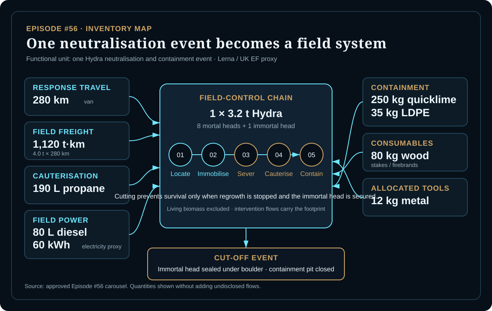
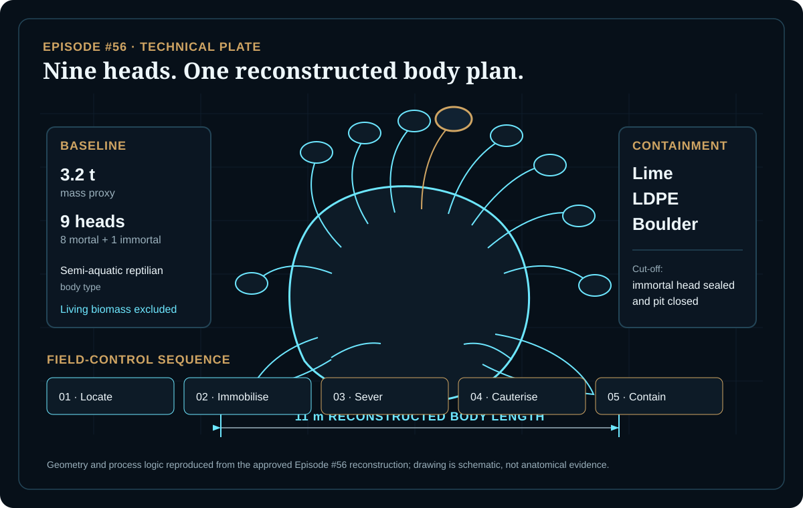
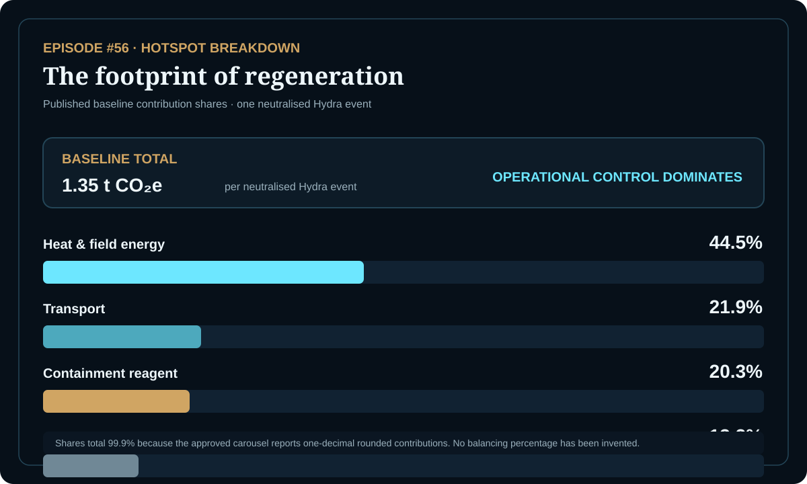

EPISODE #56 · MYTHS & LEGENDS
Hydra of Lerna
What does it take to stop a system that regenerates before the intervention is complete?
THE SUBJECT
A monster becomes a controlled event.
The approved model treats the Hydra not as magic, but as a hazardous biological incident: a multi-headed organism neutralised by cutting, thermal cauterisation and controlled containment. The service is therefore not simply killing a myth; it is preventing regeneration.
The narrative supplies the regenerative threat and the immortal head. The 11 m body length, 3.2 t baseline mass, semi-aquatic body plan and modern field-response system are explicit reconstruction choices used to make that threat measurable. Living biomass itself is excluded from the inventory.
Body plan
11 m reconstructed length, 3.2 t baseline mass and nine heads: eight mortal, one immortal.
Control chain
Locate, immobilise, sever, cauterise and contain. The model is a field-control chain, not a duel.
Main hotspot
Heat and field energy contribute 44.5% of the baseline footprint.
Scale sensitivity
A 2.2–4.8 t body moves the result from 1.01 to 1.88 t CO₂e because the intervention scales with the beast.
VISUAL MODEL
From regrowth to containment
The main field inputs and the reconstructed geometry are separated so the intervention remains auditable.


LIFE CYCLE INVENTORY
The inventory behind the labour
Activity data and disclosed factors follow the approved episode. Calculated line contributions below are simple activity × factor products where both values are explicitly reported.
| Stage | Component / activity | Activity data | Climate change | Modelling basis |
|---|---|---|---|---|
| Response | Van response travel | 280 km | Included in the 21.9% transport group; individual factor/contribution not disclosed in the approved carousel. | Response travel to and from the field event; Lerna geography with UK emission-factor proxy. |
| Logistics | HGV freight | 1,120 t·km | ≈223.4 kg CO₂e | 4.0 t × 280 km; DEFRA 2026 HGV factor 0.19947 kg CO₂e/t·km. |
| Cauterisation | Propane | 190 L | ≈327.8 kg CO₂e | DEFRA 2026 combustion + WTT: 1.54358 + 0.18170 kg CO₂e/L. |
| Field power | Diesel | 80 L | ≈255.6 kg CO₂e | DEFRA 2026 combustion + WTT: 2.58354 + 0.61101 kg CO₂e/L. |
| Field power | UK electricity proxy | 60 kWh | ≈7.9 kg CO₂e | DEFRA 2026 factor 0.13096 kg CO₂e/kWh. |
| Containment | Quicklime | 250 kg | ≈274.2 kg CO₂e | Published lime-production proxy, 1.09668 kg CO₂e/kg; explicitly not a DEFRA 2026 factor. |
| Containment | LDPE sheet | 35 kg | ≈111.0 kg CO₂e | DEFRA 2026 average-plastics proxy, 3.17051 kg CO₂e/kg. |
| Consumables | Wood stakes / firebrands | 80 kg | Included in the 13.2% consumables group; individual factor/contribution not disclosed in the approved carousel. | Field stakes and firebrands used by the intervention. |
| Equipment | Allocated metal tools | 12 kg | Included in grouped results; individual factor/contribution not disclosed in the approved carousel. | Allocated mass of field tools. |
Included
Response travel, field-equipment freight, propane cauterisation, diesel pump/generator and containment materials.
Excluded
Hero metabolism, divine intervention, venom afterlife and long-term marsh remediation. Living Hydra biomass is also excluded as a material flow.
Cut-off event
The model stops once the immortal head is sealed under the boulder and the field containment pit is closed.
Factor disclosure
The approved carousel discloses factors for propane, diesel, quicklime, average plastics, HGV freight and UK electricity, but not every individual inventory flow. Undisclosed line contributions are therefore left grouped rather than invented.
HOTSPOT
The footprint of regeneration
The dominant burden is operational control, not the creature itself.

Main result
1.35 t CO₂e
Per neutralised Hydra event.
Heat & field energy
44.5%
Propane and field power are the principal hotspot.
Transport
21.9%
Declared freight and response travel remain visible.
Containment reagent
20.3%
Quicklime makes containment a material burden.
Body-mass sensitivity
2.2 t → 1.01 t CO₂e
3.2 t → 1.35 t CO₂e
4.8 t → 1.88 t CO₂e
The high-mass case is +39.8% because fuel, lime, sheeting and freight scale together.
Quicklime-factor sensitivity
0.750 → 1.26 t CO₂e (−6.4%)
1.09668 → 1.35 t CO₂e
1.17696 → 1.37 t CO₂e (+1.5%)
The proxy moves the answer without overturning the hotspot story.
Containment is material
Quicklime and LDPE together represent 28.6% of the baseline according to the approved episode's interpretation.
Interpretation
Changing mass changes the intervention system, not only the animal. Regrowth creates energy demand; stopping it requires a second system built around heat, logistics and secure containment.
THE VERDICT
Cutting the head is easy; sealing the system is costly.
Regrowth creates energy demand.
Containment is material.
A self-replicating problem demands a second system to stop it.